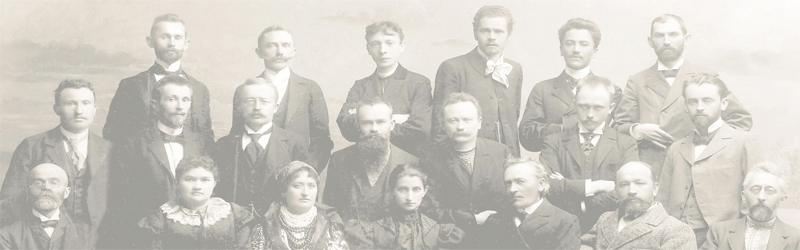

Творчість Котляревського високо цінував Тарас Шевченко. Поет в 1838 році написав вірш «На вічну пам'ять Котляревському», у якому підносив Котляревського, як національного співця та прославляв як творця безсмертної «Енеїди».
Однак вже Пантелеймон Куліш мав суворіший погляд на творчість та громадську поставу Котляревського. Куліш звинувачував свого колегу по перу в догоджанні високим чиновникам російської колоніальної адміністрації — князю Куракіну, князю Рєпніну тощо. Цим закидам опонує український літературознавець І. Снігур, який 1946 року оприлюднив у емігрантському журналі «Похід» наступну репліку:
Михайло Коцюбинський, характеризуючи роль Котляревського в розвитку української культури, підкреслив, що «занедбане й закинуте під сільську стріху слово, мов фенікс з попелу, воскресло знову… і голосно залунало по широких світах» із його творів.